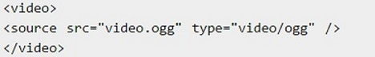
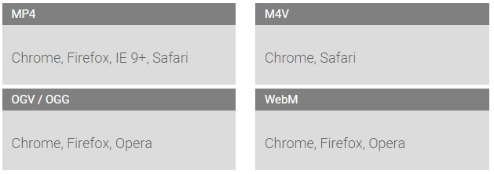
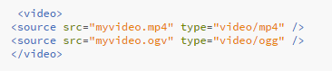
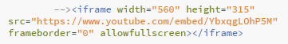
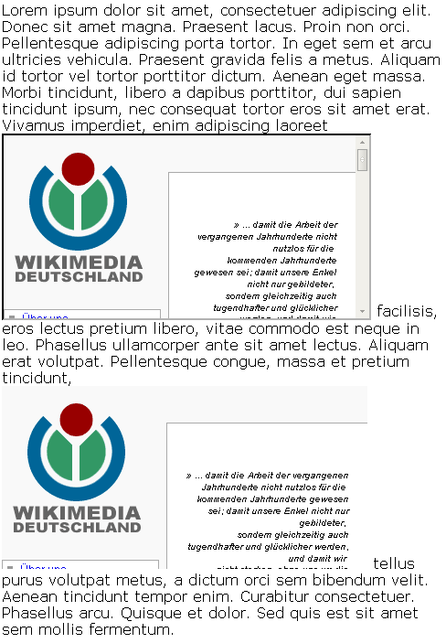

Webbasierte Anwendungen Teil 1
Embedded Videos
12. November 2015
Studiengang Medieninformatik an der Technischen Hochschule Köln
Campus Gummersbach
Gerald Grote-Lambers und Laura Skolimowski
Agenda
Embedded Videos in HTML
Möglichkeiten zur Einbindung von Videos
Browserkompatiblität
Iframe
JavaScript
Embedded Videos in HTML
- Embedded Video bezeichnet das Einbinden von Videos in einen Hypertext.
Möglichkeiten zum einbinden von Videos?
- Videoseiten (Youtube, Vimeo, ...)
- Selber Hosten

Videoseiten (Youtube, Vimeo)
- Automatische Konventierung der Videos
- Höhere Chancen bei google.de in den SERPS direkt als Video gelistet zu werden
- Video kann bequem auch auf anderen Portalen eingebunden werden
- Einbindung von Untertiteln in verschiedenen Sprachen
- Spare Traffickosten
- kein garantierte Verfügbarkeit
- Ggf. werden Links auf YouTube gesetzt und nicht auf die eigene Seite
- Keine Kontrolle mehr was die Veröffentlichung anbetrifft
- Der Anbieter kann eigene Werbung schalten vor das Video schalten
Vorteile:
Nachteile:
Selber Hosten
- Vollständige Kontrolle
- Eigene Player können einfacher realisiert werden
- Alle Versionen für alle Endgeräte und Bandbreiten können optimiert und vorgängig kontrolliert werden.
- Selbst gewähltes Vorschaubild, das angezeigt wird, bevor das Video läuft.
Vorteile:
HTML5
Vor HTML5 gab keine Standartmethode zum Einbinden von Videos
Es wurden Plug-ins wie Flash wurde zum Abspielen benötigt
- Heute gilt das Video-Element als Standartmethode 
Browser
- Browser kompatibilität 
Was muss man beachten ?
Browser
- Video in verschiedenen Versionen einbetten:
Mp4 = IE9,Safari
OGG = Chrome, Firefox, Opera

Wie stelle ich ein Video für alle Browser zur Verfügung?
iframe
- Benutzung eines iframe-tags statt video-tags
Youtube videos in HTML einbetten
iframe
HTML iframe
IFRAME wird häufig verwendet, um Werbung oder Inhalte anderer Anbieter in eine Webseite einzubetten
- Nur Rücksicht die Maße, nicht Gestaltung und Ladezeit der IFrame-Inhalte anzuzeiget.
iframe
Beispiel: Wikimedia-Startseite im Inlineframe
(einmal normal und einmal mit frameborder="0" und scrolling="no") 
video

Video Attribute
Bedeutung der einzelnen Attribute:
- width – die angezeigt Breite der Videos
- height – die angezeigt Höhe des Videos
- poster – ein Bild, das angezeigt wird, wenn das Video noch nicht gestartet wurde
- autoplay – das Video wird sofort gestartet
- controls – es werden für die Steuerung Steuerelemente angezeigt
- autobuffer - Zwischenspeicherung aktivieren
JavaScript
- Erstellung von Programmgesteuerten benutzerdefinierte Wiedergabesteuerelemente
- Festlegen und Abrufen der aktuellen Wiedergabeposition
- aktuelles Video ändern